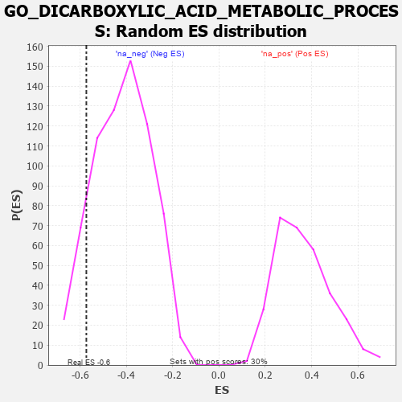

| | | Dataset | 7d |
| Phenotype | NoPhenotypeAvailable |
| Upregulated in class | na_neg |
| GeneSet | GO_DICARBOXYLIC_ACID_METABOLIC_PROCESS |
| Enrichment Score (ES) | -0.5728114 |
| Normalized Enrichment Score (NES) | -1.37261 |
| Nominal p-value | 0.12034384 |
| FDR q-value | 0.37520418 |
| FWER p-Value | 1.0 |
Table: GSEA Results Summary
 Fig 1: Enrichment plot: GO_DICARBOXYLIC_ACID_METABOLIC_PROCESS
Fig 1: Enrichment plot: GO_DICARBOXYLIC_ACID_METABOLIC_PROCESS
Profile of the Running ES Score & Positions of GeneSet Members on the Rank Ordered List
| PROBE | GENE SYMBOL | GENE_TITLE | RANK IN GENE LIST | RANK METRIC SCORE | RUNNING ES | CORE ENRICHMENT | | 1 | MTRR | | | 154 | 1.217 | 0.1030 | No |
| 2 | ACLY | | | 3149 | 0.130 | -0.2603 | No |
| 3 | SDHB | | | 4289 | -0.058 | -0.3976 | No |
| 4 | SDHA | | | 4334 | -0.066 | -0.3965 | No |
| 5 | MTHFS | | | 4337 | -0.066 | -0.3901 | No |
| 6 | ACOT8 | | | 5364 | -0.288 | -0.4901 | No |
| 7 | FOLR2 | | | 5563 | -0.336 | -0.4812 | No |
| 8 | OAT | | | 6293 | -0.572 | -0.5153 | Yes |
| 9 | NIT2 | | | 6365 | -0.603 | -0.4637 | Yes |
| 10 | ACMSD | | | 6367 | -0.603 | -0.4032 | Yes |
| 11 | GRHPR | | | 6528 | -0.676 | -0.3554 | Yes |
| 12 | KYNU | | | 6802 | -0.816 | -0.3078 | Yes |
| 13 | MDH1B | | | 6960 | -0.912 | -0.2358 | Yes |
| 14 | FTCD | | | 7055 | -0.970 | -0.1501 | Yes |
| 15 | KMO | | | 7432 | -1.308 | -0.0660 | Yes |
| 16 | GGT1 | | | 7447 | -1.329 | 0.0659 | Yes |
Table: GSEA details [plain text format]

Fig 2: GO_DICARBOXYLIC_ACID_METABOLIC_PROCESS: Random ES distribution
Gene set null distribution of ES for GO_DICARBOXYLIC_ACID_METABOLIC_PROCESS